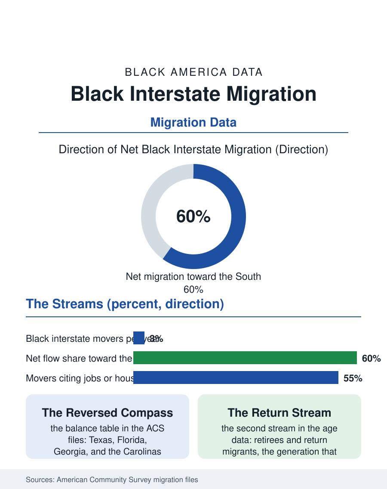

Black Census
The Reversed Compass: Black Interstate Migration
The state-to-state migration matrix records the New Great Migration annually: net flows to Texas, Florida, and the Southeast, driven by jobs, housing, and return. The migration matrix file.

Americans move less than they used to, and Black Americans move with the current: the interstate migration streams in the census data run, on balance, toward the South, toward Texas and the Carolinas and Georgia, reversing the flow that defined the twentieth century. The state-to-state matrix the Census Bureau publishes each year is the closest thing demography has to a flight recorder, and in the Black data it records the New Great Migration in annual increments. This article reads the migration matrix.
The Streams and Their Direction
The American Community Survey's state-to-state migration files count roughly a million or more Black interstate movers in a typical recent year, a few percent of the population, and the net balances by state draw the map plainly. The largest net gains concentrate in Texas, Florida, Georgia, North Carolina, and Arizona; the largest net losses in New York, Illinois, California, and New Jersey, with the flows between specific pairs telling the human story: New York to Florida and Georgia, Chicago to Indiana, Atlanta, and Houston, Los Angeles to Las Vegas, Phoenix, and the Inland Empire that is migration wearing a shorter commute's clothes. The age profile of the streams bends at both ends of life: young adults moving for the job files' reasons, college and first employment, and a second, older stream, the retirement and return migration of the generation that left the South as children and comes back as grandparents, buying into the Black Belt's county seats and the Southern metros at prices the northern housing file makes possible by selling a lifetime's equity into a cheaper market.
Why the Matrix Moves
The survey's reason-for-move data, collected in the companion population surveys, assign the streams their motives with a useful honesty: employment first, housing close behind, family third, and the three braided together in the case that defines the era, the worker whose remote job lets the housing motive win, trading a northern rent for a southern mortgage while keeping the northern salary, a trade the wage and homeownership files jointly price. Educational migration overlays its own geography, HBCU enrollment pulling students south and east in streams the education file counts, with a measurable share converting the college move into a permanent one. The return stream carries a motive the survey categories flatten into family: the pull of the ancestral county, the church of one's childhood, the care of aging parents who never left, and the land, in the heirs' property cases, that requires a resident heir to hold it. Climate and cost push from behind in the loss states, insurance premiums in Florida complicating its own inflow story even as the tax and housing arithmetic keeps the stream moving. The matrix records gross flows far larger than the nets, for every stream a counterstream, which is demography's way of saying the migration is a sorting, not an evacuation: the North keeps gaining Black professionals in its knowledge metros even as it loses population on net.
What the Moves Rebuild
The consequences land in the receiving places with the force the city files document: the Black suburbanization of Atlanta, Houston, Charlotte, and Raleigh, school systems and church congregations and political maps remade within a decade, and a southern Black middle class increasingly composed of the northern-born and their children, an identity blend the cultural data are beginning to register. The sending places feel the mirror image, the northern Black neighborhoods whose population loss concentrates among the young and credentialed, aging the communities left behind and straining the institutions, churches, and political representation apportioned by the census counts the migration rewrites. Representation is the file's hardest arithmetic: congressional and legislative seats follow the decennial counts, so the migration is slowly transferring formal political weight toward the states gaining Black population, a transfer whose partisan meaning the data leave, properly, to other publications. The migration file closes with the recorder still running. The streams of the 2020s are smaller than the Great Migration's flood and larger than the stagnant 2010s, moving an older, wealthier, more educated population than the one that moved north a century ago, in the opposite direction, for reasons their grandparents would recognize instantly: work, land, family, and the price of a house. The matrix will publish again next year. The direction, on every current indicator, will not change.
More in Black Census
The Black Population of the United States: Size, Definitions, and Distribution
The Black population of the United States totals 52.8 million — 15.4 percent of the nation. How the Census Bureau defines and counts the population, and where it lives.
Black Median Household Income in the United States
Black median household income stands at $56,490 in the Census Bureau's annual income report — how the figure is measured, how it compares, and what drives it.
The Black Poverty Rate: Levels, Children, and the Long Trend
The official Black poverty rate is 17.1 percent — against 11.1 percent nationally and 7.7 percent for non-Hispanic White Americans. How poverty is measured and what the data show.
Source: U.S. Census Bureau, American Community Survey state-to-state migration flow files; Current Population Survey geographic mobility data.